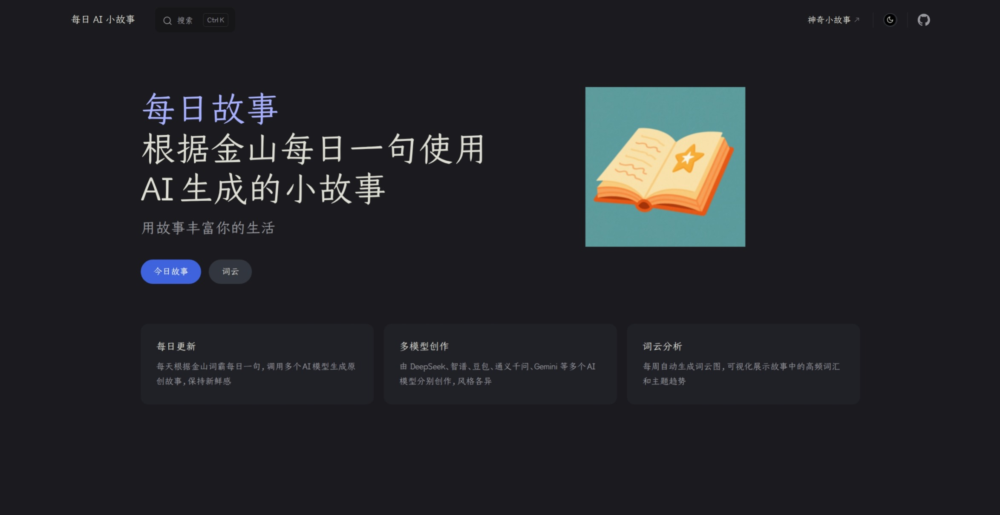

Everyday Stories
A daily story generator that takes Jinshan's sentence of the day, feeds it to 7+ AI models in parallel, and publishes the results as a living VitePress site.
00 · Gallery
A tour of the site
From the homepage to story pages to word cloud analysis — see what Everyday Stories looks like.

01 · Features
What it does
-
Multi-model ParallelSeven minds, one sentence
ThreadPoolExecutor dispatches the same daily prompt to 7+ AI models — DeepSeek, Zhipu, Kimi, Doubao, Qwen, Gemini, and more — each writing in its own style without interfering with the others.
-
Plugin ConfigDrop in a file, it works
Each model lives in its own
_config.pyfile exporting 6 symbols. ModelRegistry discovers it automatically. No core code changes, no registry edits, no import wiring. -
Lazy LoadingImport does nothing, fetch happens on demand
Zero HTTP requests at import time. The daily Jinshan sentence and web search results are fetched lazily via
_shared.pyonly when first accessed, keeping startup instant. -
Pipeline ArchitecturePreprocess · Chat · Postprocess · Persist
A pure-functional chain: PREPROCESSORS → Chat API → POSTPROCESSORS → file output. Every stage is independently pluggable, making the system testable and composable by construction.
-
Word Cloud InsightFind the themes hiding in 2,700 stories
Weekly tokenization and frequency analysis across the entire story corpus. Generates word cloud images and reports that reveal topic shifts and evolving narrative trends over time.
-
Zero-Ops AutomationSet once, run forever
GitHub Actions triggers daily at 23:00 UTC. Cloudflare Pages auto-deploys. Log files archive themselves when they grow too large. No one needs to touch the server.
02 · Principles
Design philosophy
-
01
Simplicity over cleverness Prefer simple, mature, and maintainable implementations. No unnecessary dependencies, no over-engineering. Complexity is not a feature; maintainability is.
-
02
Zero-friction extension Adding a new model means one file, zero changes to core code. ModelRegistry auto-discovers, the pipeline auto-orchestrates. Truly plug and play.
-
03
Pure-functional core No classes (except Registry). No side-effect chains. Every processor is a pure function; the pipeline is function composition. Testable, traceable, predictable.
-
04
Full observability JSON Lines appends every API call's model, duration, and token usage. Compatible with legacy JSON array format. O(1) persistence, backward-compatible from day one.
-
05
Zero-config developer experience Three steps to start:
pip install -r requirements.txt, fill in.env, runpython main.py. No Docker, no orchestration, no ceremony. -
06
Automation-first Scheduled triggers · auto-generation · auto-archival · auto-deployment. GitHub Actions runs daily, Cloudflare Pages goes live instantly. The project runs unattended, indefinitely.
03 · About
Project philosophy
Everyday began with a simple idea: let AI write a story for every day of the year. Jinshan's daily sentence is the seed; seven different AI models are seven different narrative eyes. The same prompt reads cold and sharp through DeepSeek, epic through Kimi, warm through Zhipu and Doubao. We don't pick camps, we don't lock in — if a model can speak, we let it tell a story. After 2,700 stories, the project has become what it was meant to be: an automated story factory that runs every day with zero human intervention, and has never missed a day.
04 · FAQ
Frequently asked questions
- How do I get started?
- Clone the repo, create a
condaenvironment, install dependencies, copy.env.exampleto.envwith your API keys, then runpython main.py. See the README's Quick Start section. - How do I add a new AI model?
- Add
API_KEY_XXXto.env, createmodel_configs/xxx_config.pywith 6 standardized exports. ModelRegistry discovers it automatically. No core directory changes needed. - Where are the stories stored?
- As Markdown under
story/故事/, organized by date (year/month/day).story/index.mdis the VitePress homepage, updated automatically bysave_to_md_file. - How do I preview the site locally?
- Run
npm install && npm run docs:devfrom the project root. VitePress starts a dev server with live reload. All stories and word cloud reports are accessible locally. - How is code quality maintained?
rufffor linting,pytestfor unit tests.chat_ai()has exponential backoff retry;image_utils.pyuses an in-memory cache to avoid re-downloads. Markdown writes use atomicos.replace()to prevent partial writes.
Have more questions? Open an issue on GitHub Issues.